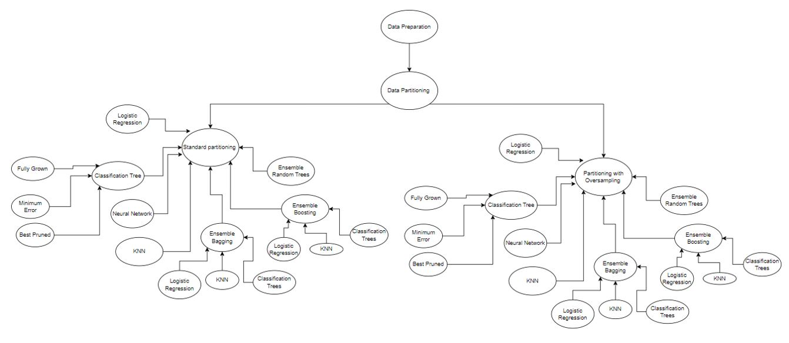
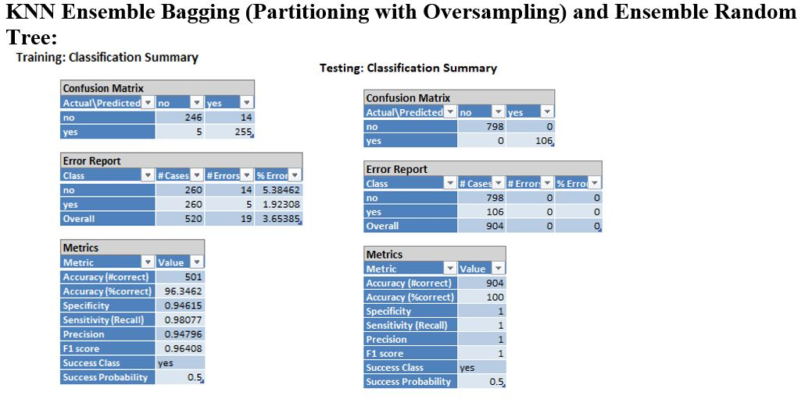

Predictive Modeling for Marketing Optimization using XL Miner
View Full Report and Excel Results on GitHub:
Click here to view the full report and the excel results on GitHub
Problem Statement:
Management of Western Alliance Bank is concerned how to optimise marketing strategies and improve their effectiveness in selling term deposits to the customers. The bank needs help in developing a more granular understanding of its customer base, predict customers' response to its telemarketing campaign and establish a target customer profile for future marketing plans. The bank can then focus its marketing efforts on those customers.
Executive Summary:
This project indicates the development and selection of a predictive model for Western Alliance Bank to optimize the effectiveness of marketing strategies targeting term deposit subscriptions. Using the principles of CRISP-DM methodology described by Chapman, P., Clinton, J., Kerber, R in CRISP-DM 1.0: Step-by-step data mining guide, we focus on building a model that predicts if a customer will subscribe to the term deposit or not.
1. Business Understanding
Objectives:
- To use predictive analytics for improving term deposit subscription rates.
- To ensure marketing efforts by targeting customers with a high probability to subscribe.
- To achieve a cost-effective marketing approach by focusing the efforts on reaching out to potential customers who are most likely to be interested, rather than spending resources on those who are less likely to engage with the term deposit subscription.
2. Data Preparation
Data Cleaning and Transformation:
- Systematically cleaned data to ensure data quality.
- Checked for missing values, data types, and duplicated rows.
- Combined Poutcomes ‘other’ with ‘unknown’ for even data distribution.
- Removed rows where 'duration' is less than 5 seconds.
- Checked for outliers in Age, Balance, Duration, Campaign, Pdays, and Previous.
- Removed or kept outliers based on their business relevance.
- Evaluated and retained relevant columns based on data distribution, such as Marital Status and Education.
- Used one hot encoding to encode categorical variables for XL Miner classification modeling.
- Dataset split into Standard partitioning (SP) with 50% training, 30% validation, 20% testing and Partitioning with Oversampling (OS) with a balanced training set.
3. Modelling
Various Models Used:
Model Selection:
- Models with 100% accuracy may be considered for overfitting concerns and lack of generalizability. These models cannot be primary choice of deployment.
- Selected prediction on models' capacity for binary classification and adaptability to the campaign's unique dataset.
4. Evaluation
Performance Metrics:
- Precision is the best metric to ensure marketing efforts are correctly concentrated on the most promising prospects, thus maximizing return on investment. Precision is the ratio of true positives (correctly identified subscribers) to all predicted positives (all instances where the model predicted a subscriber, correctly or not). A high precision means that when the model predicts a customer is a subscriber, it is very likely to be correct.
- Also considered sensitivity, accuracy, specificity, and F1 score.
- Conducted evaluation on both standard partitioning and partitioning with oversampling test scores.
Model Comparision:
- Improving Term Deposit Subscription Rates: This requires a model that not only accurately predicts potential subscribers (high precision) but also doesn't miss out on a significant number of actual subscribers (reasonable sensitivity).
- Cost-Effective Marketing Approach: Precision is crucial here, as targeting customers who are most likely to subscribe will optimize resource allocation. However, it's also important to consider the overall accuracy and F1 score for a balanced approach.
- Improving Marketing Campaign Focus and Effectiveness: This involves identifying the right customers (precision) without overwhelming those unlikely to subscribe (specificity) and making sure there’s a broad enough reach to capture most potential subscribers (sensitivity).
Let’s reiterate the objectives and how our models can be based on them. Our Objectives are:
Based on the business needs, evaluating the best practical models’ results:
Considering the business needs, K-Nearest Neighbours (KNN) ensemble bagging in the oversampling partition seems to be the most suitable model (left figure above). It offers high precision making sure that the marketing efforts are focused on the most promising prospects and its sensitivity is really high, which means it can also identify a good number of actual subscribers. This is crucial for a cost-effective and efficient marketing strategy. However, it is also crucial to consider the potential for overfitting with the Ensemble Decision Trees (right figure above). If further validation confirms that the Ensemble Decision Trees model is robust and generalizes well, it might be worth considering due to its high precision and sensitivity. In summary, for a balanced approach that meets the business objectives, the KNN ensemble bagging partitioned by oversampling seems most appropriate with a secondary consideration for the Ensemble Decision Trees model if its generalizability is confirmed.
6. Deployment
Implementation Strategy:
KNN Model Ensemble Bagging is recommended for deployment with performance monitoring mechanisms in place.
Parallel Testing:
- Run the Ensemble Decision Trees model in parallel with the primary KNN model. This allows for a side-by-side comparison of their performances in a real-world setting.
- Use this parallel testing phase to validate the practical accuracy and generalizability of the Ensemble Decision Trees model, especially considering its 100% accuracy in testing, which might indicate overfitting.
7. Conclusion and Recommendations
Key Findings:
- Precision is very important in direct marketing to ensure cost-efficiency.
- KNN Ensemble Bagging Model offers the best balance between high precision and accuracy, essential for effective targeting.
Recommendations:
- Deploy KNN Ensemble Bagging Model for targeted marketing initiatives and as mentioned in the deployment section, perform parallel testing with the Ensemble Decision Trees.
- Establish a continuous improvement cycle for the model to adapt to new data and market changes as mentioned in the Deployment section.